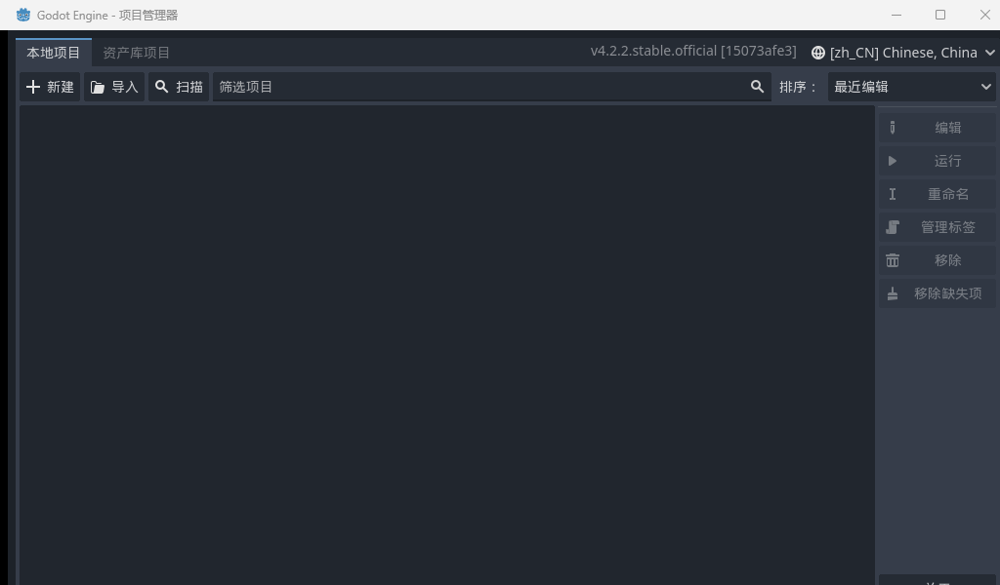
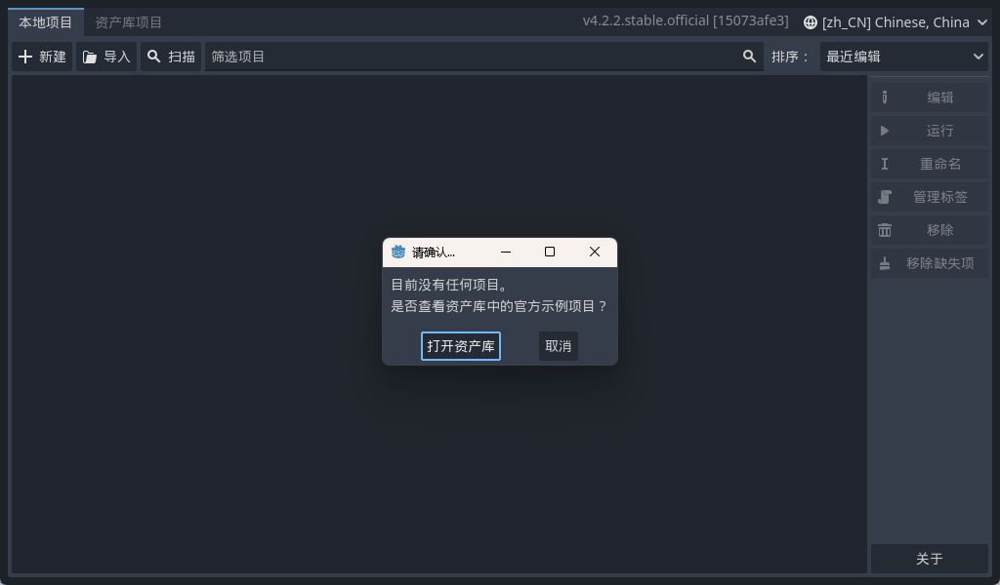
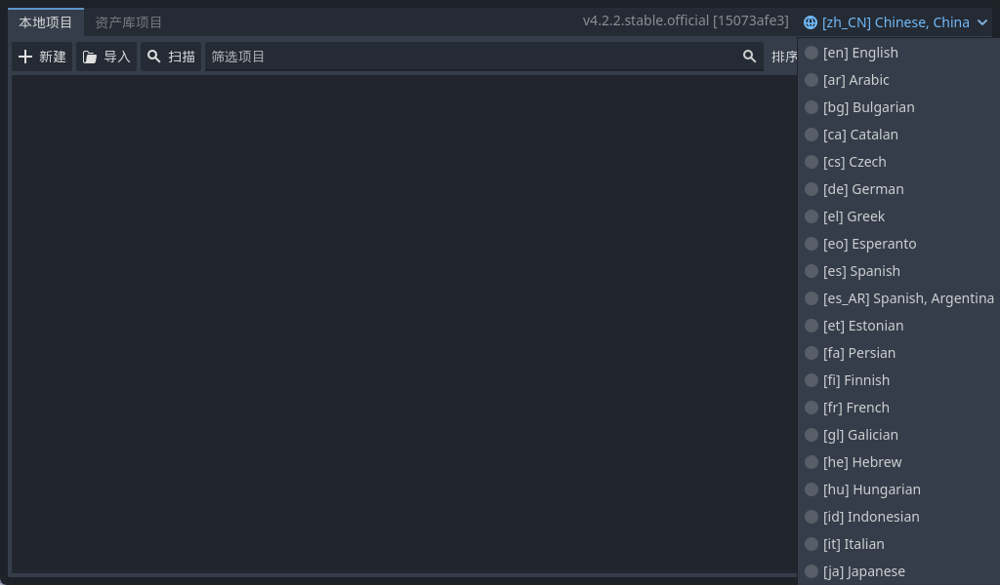
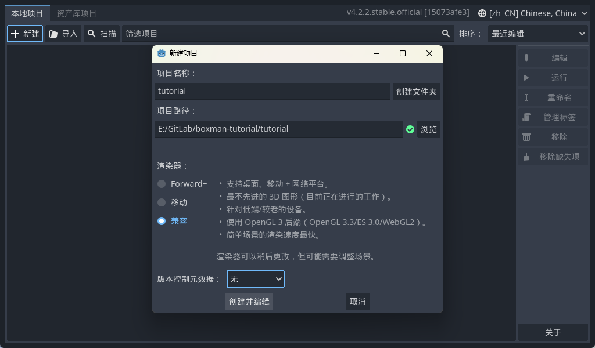
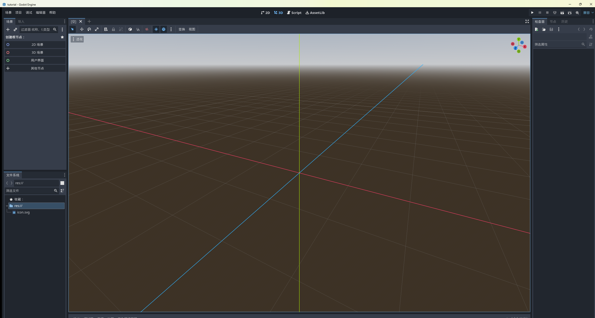

大家好，我是「山岚的运维笔记」。
新系列今天开张。先立个 flag：接下来一段时间，我要带着完全零基础的你，从一个空文件夹开始，做出一个正儿八经的推箱子游戏——能选关、能存档，最后还能打包成 Windows 程序和网页游戏的那种。
不需要会编程，不需要懂美术，甚至不需要知道"游戏引擎"是个啥。一篇只讲一件事，讲到明为止，你照住步骤做就冇问题。
今日第一篇，先搞掂最容易劝退嗰关：装环境。
做游戏嘅引擎唔少，我畀新手首推 Godot，理由讲出嚟有啲土：佢真系免费，而且细得离谱。
免费到什么程度？有的引擎的套路是入门白送、你游戏赚钱了我抽成。Godot 系开源社区维护嘅，你拿佢做嘅游戏卖爆咗，人家一分钱都唔收。
小到什么程度？官方下载一个 zip，解压出一个小 exe，没了。我出街成日将佢揣喺 U 盘度，想畀朋友睇就插上，几有当年带住绿色版软件出街嘅潇洒。
写代码用的是 GDScript，跟 Python 长得像亲兄弟，后面系列里所有代码我都一行行带着敲，你只管抄。
版本提醒：我们用的是 Godot 4.2.2。网上很多老教程是 3.x 的，接口对不上，跟敲必报错，看到记得绕道，别跟自己过不去。
为啥说尽量写得长？因为真系冇嘢可写。
官网 godotengine.org，点 Download，下 Windows 标准版，得到一个 zip。解压到纯英文路径，比如 D:\Godot，双击里面的 exe。
没了。这就是全部。
第一次打开是这个界面，叫项目管理器，你可以理解成"项目大厅"，以后你的游戏都住这里：

它刚开还会热情地问要不要逛官方示例项目，点取消：

我哋系嚟自己动手嘅，唔逛别人家后花园。
冷知识：Godot 会自动跟着系统语言走。你是简体中文 Windows，打开就是中文，这节可以直接翻篇。
看到英文界面的朋友，点项目管理器右上角的语言下拉，一长串列表会哗啦出来：

滚到最底下，[zh_CN] Chinese, China 在等你，点它，当场变中文。设置自动记住，下不为例。
回主界面，点左上角「+ 新建」，一屏选项看着挺吓人，其实就四处要看：

名称填 tutorial，跟我教程保持一致，以后代码好对照；路径选个英文的空文件夹；渲染器选最下面的「兼容」——2D 跑得最快，老显卡也带得动，以后导出网页版还得靠它，选贵的不如选对的；版本控制选「无」，现在开了只会提前生成一堆你看不懂的文件。
点「创建并编辑」，编辑器就开出来了：

恭喜，开发环境呢部分，你已经搞掂喇。中间那片先不用管，下一篇我带你把整个编辑器逛个遍。
今日搞掂嘅活盘点：解压一个包，确认中文，白嫖一个空项目。没写一行代码，但"装环境"这关拦住的人，可比后面的代码拦住的多多了，你今天已经跳坑了。
有用就点个赞、点一下在看；想跟埋全程嘅，关注「山岚的运维笔记」，有更新第一时间推畀你。评论区吹水啦，我逐条覆。
下一篇见。
（配套工程在 GitHub 的 Boxman 仓库 tutorial 分支，每篇一个进度 tag，随时下到对应版本。）